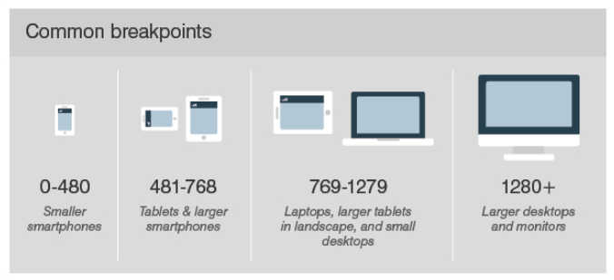

반응형 responsive 웹 디자인은 중단점 break point를 기준으로 웹 페이지 내 요소의 크기를 조정하거나 재구성하는데 사용하는 레이아웃
중단점은 특정 뷰포트의 너비(픽셀) 값이면서 웹 사이트의 레이아웃이 변경되도록 만드는 트리거 역할을 함
중단점 정의는 css 미디어퀘리를 이용해서 설정할 수 있음
모바일 , 테블릿 , 데스크탑 등 각각의 장치별로 독립적인 템플릿을 만들고 그에 맞는 레이아웃에 따라 웹 페이지를 디자인하는 방식
다양한 장치에서도 웹 브라우징이 가능하게 되면서 뷰포트 너비에 따라 유연하게 컨텐츠를 배치하는 기술이 도입됨
미디어 쿼리는 단말기 유형, 화면해상도, 뷰포트 너비에 따라 웹사이트 스타일을 적용할 수 있게 해주는 기술